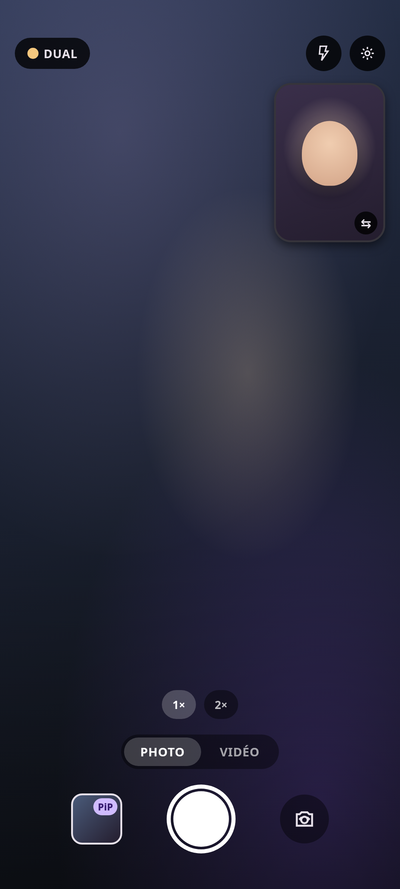
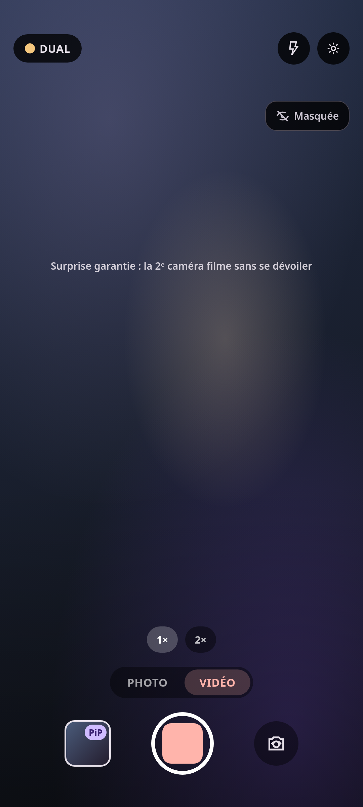
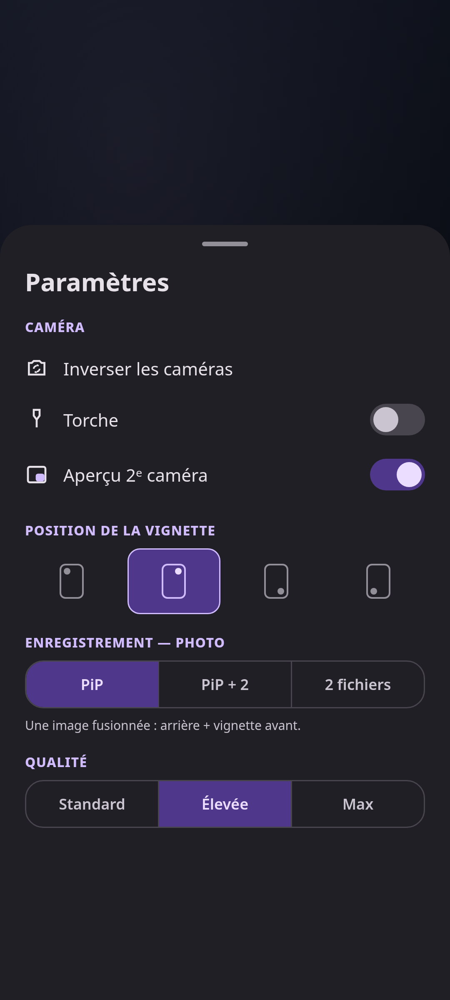
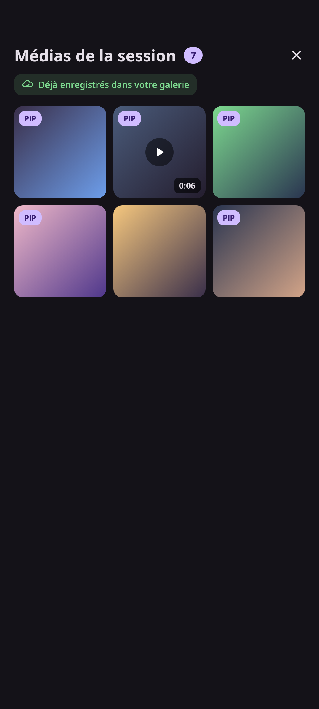

Avant + arrière, en une seule prise. Photo & vidéo dual-caméra avec fusion Picture-in-Picture, entièrement sur votre appareil.
Une app appareil photo pensée pour la spontanéité.
Capture l'avant et l'arrière en même temps — photo ou vidéo — depuis une seule session caméra.
Un seul fichier fusionné (arrière plein cadre + vignette avant), composé directement sur l'appareil.
Masquez l'aperçu de la 2ᵉ caméra : elle filme toujours, mais l'effet reste une surprise à la relecture.
Aucun compte, aucun serveur, aucune analyse. Vos médias restent dans votre galerie, un point c'est tout.
Interface Material 3 qui s'adapte aux couleurs de votre système (Android 12+).
Français, anglais, espagnol, allemand, portugais et italien — selon la langue du téléphone.
Viseur double, mode surprise, réglages et galerie de session.



